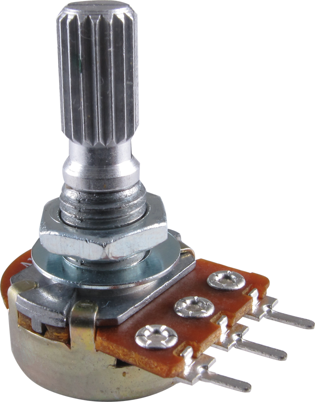
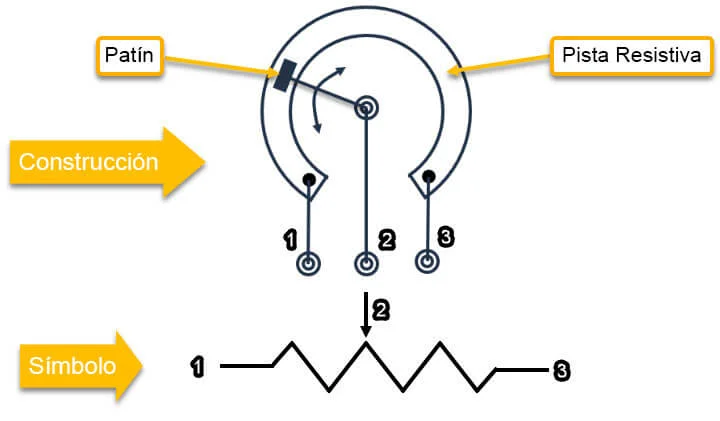
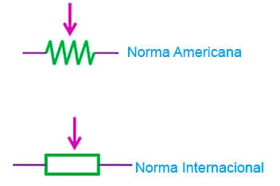
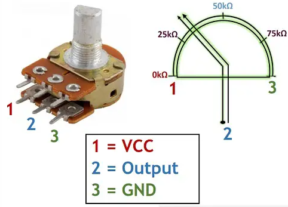
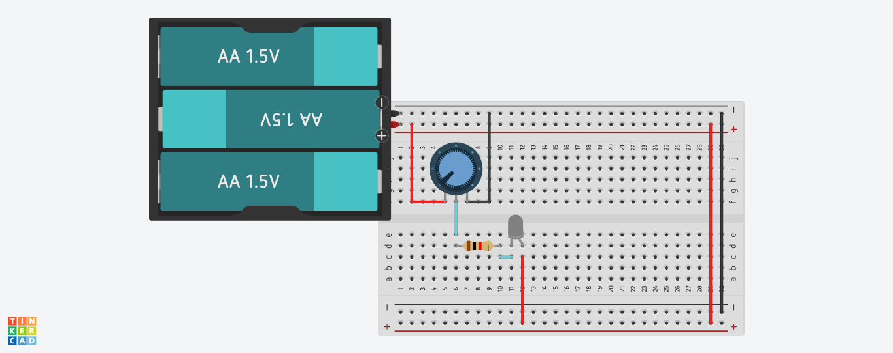

Potenciometro

¿Que es?
Es un componente electrónico pasivo que permite controlar y ajustar la resistencia eléctrica en un circuito.Consiste en una resistencia variable y un contacto móvil, que se desliza a lo largo de la resistencia. Su principal función es dividir la tensión o corriente es una proporción específica, lo que permite controlar el nivel de señal en un circuito.
Estos presentan diferentes características según su diseño y aplicaciones. Pueden ser lineales o logarítmicos, con resistencia variables de uno o varios giros. Algunos cuentan con una perilla el ajuste; mientras que otros son controlados electronicamente.
Además, existen potencíometros con interruptores integrados, lo que permite activar o desactivar funciones adicionales dentro del circuito.
Los potenciometos se utilizan para ajustar el volumen en dispositivos de audio, controlar la velocidad de motores, regular la intensidad de luz en paneles de iluminación y muchas otras aplicaciones.
Potenciometro
Simbolo Esquematico
¿Para que sirve?
El potenciómetro, también conocido como ".poti", es un componente eléctrico utilizado para ajustar la resistencia eléctrica en un circuito. Sirve para variar la cantidad de corriente eléctrica o voltaje que fluye a través de un circuito eléctrico de acuerdo con su posición o ajuste. Aquí tienes algunas de las aplicaciones y usos más comunes:- Control de Volumen: En sistema de audio, como radios, amplificadores y reproductores de música, se utilizan para ajustar el volumen del sonido. Girar el potenciometro permite aumentar o disminuir la intensidad del sonido según las preferencias del usuario.
- Control de Luminosidad: En iluminación, se utilizan para controlar la intensidad de las luz en lámpalas y reguladores de intensidad. Esto permite crear ambientes con diferentes niveles de iluminación.
- Control de Velocidad en Motores: Se utilizan para controlar la velocidad de motores eléctricos en aplicaciones como ventiladores, cintas transportadas y máquinas herramienta. Ajustar el potenciometro varía la velocidad de funcionamiento del motor.
- Ajuste de Parámetros en Circuitos Electrónicos: En la electrónica y la ingeniería, son usados para ajustar parámetros en circuitos electrónicos, como la ganancia en amplificadores, la frecuencia en osciladores y otros ajustes precisos.
- Mediciones y Calibraciones: Se utilizan en instrumentos de medición y equipos de calibración para realizar ajustes finos y precisos. Esto es esencial en en aplicaciones cientificas y de laboratorio donde se requieren mediciones exactas.
- Control de Temperatura: En algunos termostatos y sistemas de control de temperatura, usados para ajustar al temperatura deseada.
- Control de Brillo en Pantallas: EN algunos dispositivos con pantallas, como monitores y televisores antiguos, se usan para ajustar el brillo y el contraste de la pantalla.
- Regulación de Frecuencia en Radios: En radios antiguas, los potenciómetros se utilizaban para sintonizar diferentes estaciones y ajustar la frecuencia de recepción.
¿Como funciona?
El funcionamiento de los pntenciómetros se basa en el principio de la resistencia eléctrica variable. Consisten en una pista de resistencia sobre la cual se desliza un contacto móvil.A medida que el contacto se desplaza a lo largo de la pista de resistencia, la cantidad de resistencia en el circuito cambia, lo que a su vez afecta la cantidad de corriente que fluye. Cuando se fira o desliza, el contacto móvil se mueve a lo largo de la psita de resistencia, alterando así la proporción de resistencia en el circuito.
Esto permite ajustar la resistencia eléctrica y, en consecuencia, controlar el nivel de señal o la intensidad de corriente en el circuito.
Los potenciómetros lineales proporcionan un cambio de resistencia proporcional a la posición del contacto móvil a lo largo de la pista de resistencia.
Por otro lado, los potenciometros logaritmicos tienen una curva de respuesta logarítmica, lo que los hace más adecuados para aplicaciones de audio, donde la percepción humana del volumen sigue en a escala logarítmica.
El funcionamiento de un potenciometro se basa en el ajuste de la resistencia eléctrica mediante el movimiento de contacto móvil a lo largo de un pista de resistencia.
Caracteristicas Principales
Un potenciometro es un componente electrónico pasivo, esencialmente una resistencia variable con tres terminales, que ajusta manualmente la tensión o corriente en un circuito. Se caracteriza por tener un rango de resistencia (ej. 0 a 10kΩ), un cursor móvil (o deslizante) que varía dicha resistencia, y tipos lineales o logarítmicos.- Funcionamiento: Actúa como un divisor de tensión ajustable.
- Terminales: Posee tres: fdos extremos conectados a la pista resistiva y uno central (cursor) que se mueve para cambiar la resistencia.
- Valor Nominal: Representa la resistencia máxima total del dispositivo (ej. 1kΩ, 10kΩ, 100kΩ).
- Lineales (B): La resistencia cambia uniformemente con el giro.
- logarítmicos (A): La resistencia cambia según la percepción del oído humano, ideal para volumen.
- Estructura: Pueden ser retatorios (comunes) o deslizantes, construidos con materiales como carbono, plástico coductor o alambre enrollado.
- Aplicaciones: Control de volumen, intensidad de luz (dimmers), velocidad de motores y calibración de instrumentos.
- Potencia: Su capacidad de disipación suele ser baja, variando desde 0.25W hasta unos pocos vatios.
Variación (Conicidad):
Simbolo y Pinout

Simbolo Electrico

Si aplica, patillaje

Ejemplo Practico
Vamos a realizar una practica basica con un potenciometro.
Lista de componentes
- 1 Potenciometro de 5kΩ
- 1 Bateria
- 1 Diodo led
- 1 Resistencia de 1kΩ
En la imagen se muestra un circuito basico donde al girar el potenciometro enciende un led o lo pueden apagar:

Errores Comunes
Los errores comunes de un potenciómetro incluyen quemarse por exceso de carga, ruido (chasquidos) por suciedad u óxido, y fallos de linealidad (error de carga) al usarlo incorrectamenter. Estos fallos causan inestabilidad en dispositivos electrónicos, incluyendo tirones en el motor o problemas de aceleración.
Principales errores y problemas
- Quemarse por alta corriente: Usar un potenciometro para controlar cargas potentes (ej. motores grandes o luces intensas) en lugar de usar transistores provoca que el componente se queme o explote, ya que no están diseñados para mejorar corrientes elevadas.
- Ruidos y falsos contactos: La acumulación de polvo, óxido o el desgaste natural por el uso causan ruidos molestos (chasquidos o fritura) al girar la perilla, común en controlas de volumen de guitarras.
- Errores de carga y linealidad: Conectar cargas que consumen demasiada corriente a través del terminal deslizante altera la división de voltaje, provocando que la salida no sea lineal y el potenciómetro funcione mal.
- Conexión incorrecta: Confundir los pines (terminales) o no utilizar el tercer pin adecuado puede provocar un mal funcionamiento.
- Desgaste mecánico: El uso constante o la antigüedad provocan que el cursor interno no haga buen contacto, generando variaciones inestables en la resistencia.
- Problemas en potenciómetros de acelerador: En vehículos, los fallos provocan un ralentí inestable, tirones, falta de respuesta al acelerar y el encendido del testigo de fallo motor.